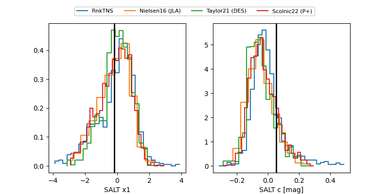

FINK: ZTF25aboytvh
Lasair: ZTF25aboytvh
ALeRCE: ZTF25aboytvh
TNS: 2025wyh
YSE: 2025wyh
ZTF25aboytvh (ztf,fink)
2025wyh (tns,yse)
equatorial (ra, dec) = (9.2063,+6.78038)
galactic (l, b) = (116.4507,-55.90737)

last atlasc=18.80, atlaso=19.11, ztfg=19.35, ztfr=18.97
1 atlasc, 2 atlaso, 7 ztfg, 4 ztfr detections